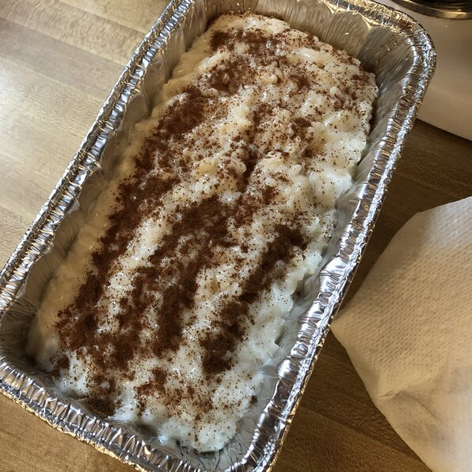

Greek Rice Pudding (Rizogalo)

Description
Greek rice pudding is simple, comforting, and delicious. Some people in Greece make it with eggs, but my aunt prefers without. Best enjoyed cold - if you can wait that long!
Ingredients
2 cups water
1/2 cup uncooked short-grain white rice
2 cups whole milk
4 tablespoons white sugar
1/2 cup whole milk
4 tablespoons cornstarch
1 teaspoon vanilla extract
1/4 teaspoon groubd cinnamon, or more to taste